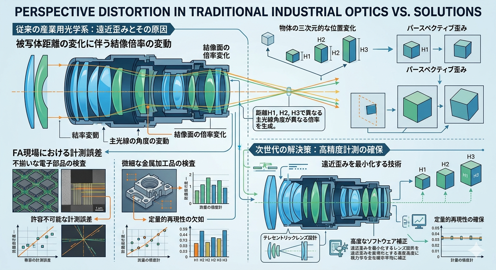

光学的幾何学における計測誤差の課題
従来の産業用光学系において、物体の三次元的な位置変化は、結像面における「パースペクティブ歪み（遠近歪み）」を引き起こします。これは被写体距離の変化に伴い主光線の角度が変動し、結像倍率が変化するという物理現象に起因します。

従来のレンズが抱える限界
- 被写体距離に依存する結像倍率の変動
- 光軸外における周辺減光と歪曲収差
- 高画素センサーに対する解像力の不足
シュナイダー社独自の光学ソリューション
テレセントリック光学系の実装
主光線を光軸に対して平行に設計することで、被写体が移動しても倍率が変化しない特性を実現。これにより「計測誤差ゼロ」の光学環境を構築します。

1億画素対応の高分解能設計
| 項目 | 仕様・特性 |
|---|---|
| テレセントリック性 | 計測誤差の排除 |
| 対応解像度 | 1億画素クラス |
| マウント構造 | 耐振動・高剛性設計 |
産業自動化への定量的インパクト
主要用途別メリット
- 半導体・電子部品: 厳密な外形寸法測定
- 精密加工品: 複雑な形状のシルエット測定
- 位置決め: サブピクセル単位の座標検知
- 長期信頼性: 堅牢設計による経年劣化の抑制
シュナイダー製レンズの導入は、外観検査システムの信頼性を飛躍的に向上させ、検査工程の自動化・省人化を論理的に裏付けることが可能となります。